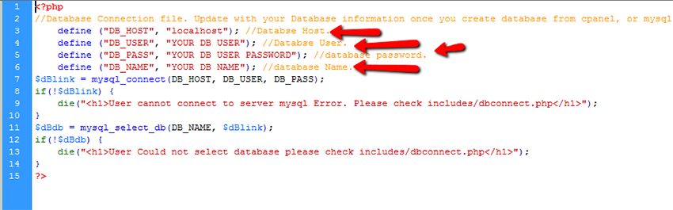

Created: 10/14/2013
By: Ateeq Rafeeq
Email: ateeq@webfulcreations.com
Thank you for purchasing my script. If you have any questions that are beyond the scope of this help file, please feel free to email via my user page contact form here. Thanks so much!
Create database
First of all you need to create a database by visint your cpanel, or webhost given panel. In localhost you can sue phpmyadmin interface. You will need
Make sure your database is connected with your database user. Once done you need to open /scripts/includes/dbconnect.php file from your download and update information like following.

Upload files
Now you can upload all files from /script/ to your desired directory in server let's say you uploaded in /admin/. Once all files are uploaded via FTP or anything just run http://yourdomain.com/admin/ and you are ready to install by setting desired info asked in form.
Admin can
Creating new page only accesable to admin
Create a new page let's say its new_page.php and put anything you want in it. Then you have to add the following code in top of that page then this will be only accessable to admin users.
<?php
include('system_load.php');
//This loads system.
authenticate_user('admin');
?>
Users can signup by reigster.php and activate their account by confirming their email id. Default user level would be assigned subscriber and they would be redirected to subscriber.php after login. Every user can edit their profile. Link is below to edit profile.
<a href="edit_profile.php?user_id=<?php echo $_SESSION['user_id']; ?>">Edit Profile</a>
Link for logout
<a href="dashboard.php?logout=1">Logout</a>
Print welcome message on any page.
You can put following code anywhere on any page to say welcome to your users.
Welcom <?php echo $_SESSION['first_name'].' '.$_SESSION['last_name']; ?>
System create a default level subscriber during installation. You can use following code in any file you want give access to subscribers. You can do this with all user levels let's say manager default page manager.php just change subscriber to manager in following code. You can put following code in top of any file you want to give access to subscribers.
<?php
include('system_load.php');
//This loads system.
authenticate_user('subscriber');
?>
Giving access to all users. Login required.
<?php
include('system_load.php');
//This loads system.
authenticate_user('all'); //This is example please change to your level name.
?>
You can use function partial_access('accesslevel') This function returns true or false. See example below
<?php if(partial_access('admin')): ?>
<p>You are admin</p>
<?php elseif(partial_access('subscriber')): ?>
<p>You are subscriber.</p>
<?php elseif(partial_access('all')): ?>
<p>You are loged in user.</p>
<?php else: ?>
<p>You are not loged in user.</p>
<?php endif; ?>
Every user by default register as subscriber from register.php to change it you can open register.php and find following line.
<input type="hidden" name="user_type" value="subscriber" />
In This code deafult value is subscriber you can change it to anything you want.
You can copy register.php name it anything and make a registration page for different level of user just change value of user_type in above field.
You can create a drop down let's say your system have 4 types of users admin, teacher, student, guest. Now you want user to select his type during registration. You can use the following code in your register.php form.
<select name="user_type">
<option selected value="subscriber">Subscriber</option>
<option value="student">Student</option>
<option value="teacher">Teacher</option>
</select>
-- Do not forget to remove hidden user_type field if you do this. --
Every user have their own section to add their notes in their profile.
Admin can send message to any user, all users and all user levels. Regular user can send message to only users they know the username or email.
As an admin by going to general settings in sidebar, you can activate captcha and change the system information.
Announcement module helps admins to announce events or notices for differnt user levels or for all users. Announcement can be activated, deleted, and edited as well.
I've used the following Scripts in this system.
Once again, thank you so much for purchasing this item. As I said at the beginning, I'd be glad to help you if you have any questions relating to this theme. No guarantees, but I'll do my best to assist. If you have a more general question relating to the themes on ThemeForest, you might consider visiting the forums and asking your question in the "Item Discussion" section.
Ateeq Rafeeq